Sve slike na ovoj stranici su prave datoteke iz docs/brand/derived/. Izradila ih je skripta iz
docs/brand/derived/tools/ samo ugrađenim .NET-om (D-029). Originali u docs/brand/source/
nisu dirani: SHA-256 se provjerava prije i poslije svakog pokretanja.
1 i 2 su tehnički dio (dopušten po D-006). 3 do 6 su bili prijedlozi; tvoji izbori (D-083) su označeni zeleno, ostale opcije ostaju kao zapis. Odabrane datoteke: icons/favicon.ico, icons/favicon-{16,32,48,64}.png, icons/badge-mono-{24,48,96}.png, light/, wordmark/.
1 · Očišćeni master tehničko
Originalni PNG je imao 1,5 milijuna gotovo prozirnih piksela (ispod 3 % neprozirnosti) iz uklanjanja pozadine:
tamnu mrlju, zelenkasti rub i raspršene točkice po praznom dijelu. Na tamnoj pozadini se ne vide, ali smetaju na svijetloj
podlozi, pri izrezivanju i pri izradi značke. Skripta ih briše i uklanja 8 sitnih otočića. Svaki piksel iznad 25 % neprozirnosti
ostao je bajt po bajt isti (skripta to provjerava), pa su silueta, munje i sjaj netaknuti. Platno je iste veličine: 4844 × 3468.
Ispod su obje verzije s neprozirnošću pojačanom 40 puta, da se vidi što je maknuto.
Original (pojačano)
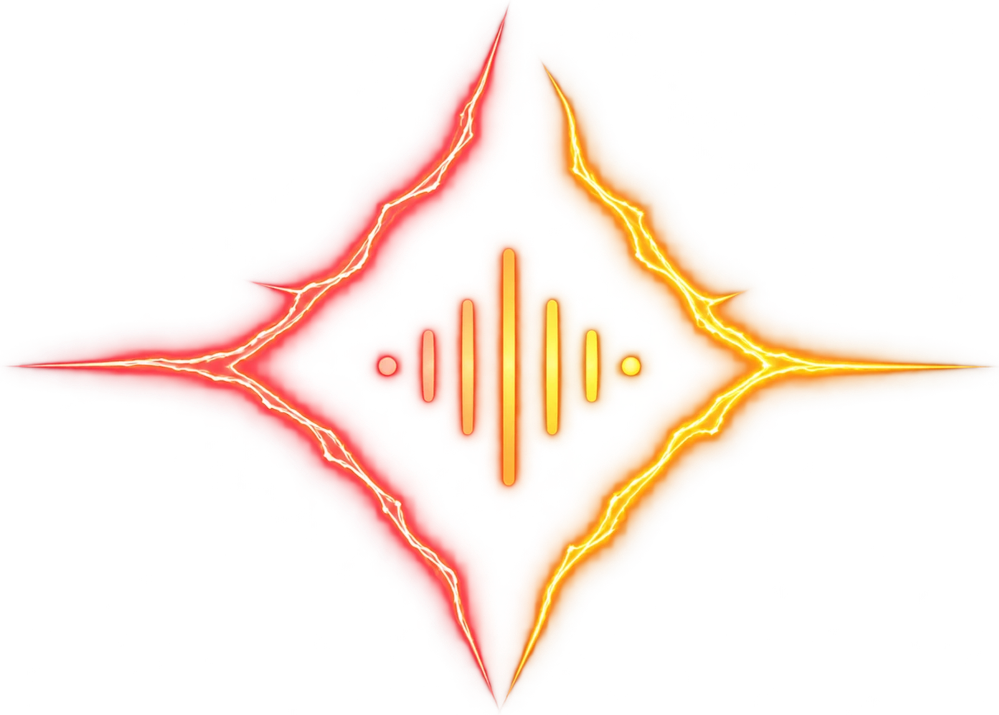
Očišćeno (pojačano)
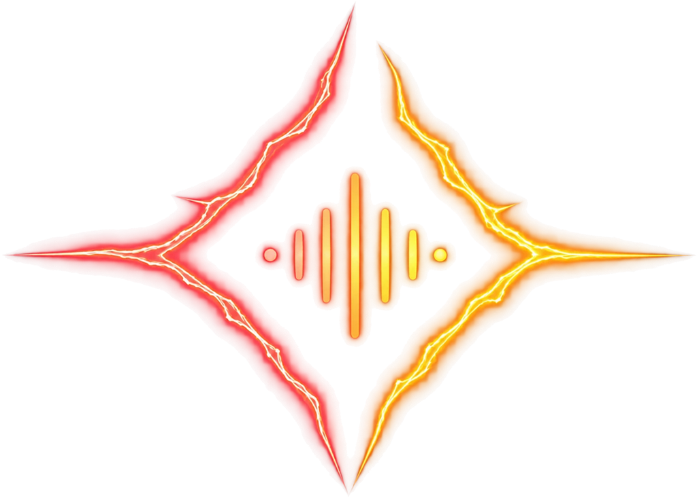
Kako izgleda normalno
master/grooverift-symbol-clean.png (puna veličina) i umanjenja 2048, 1024, 512 px
2 · Ikone aplikacije tehničko
Puni simbol na Void Black podlozi. Od 180 px naviše sjaj i munje se lijepo vide. Apple touch je pun kvadrat jer ga iOS sam
zaobljuje. PWA „any” ima zaobljene kutove. PWA „maskable” ide do ruba, a vrhovi simbola ostaju u sigurnom krugu od 80 %
jer Android ikonu izreže u krug, kapljicu ili kvadrat.
Apple touch · 180
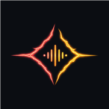
PWA any · 192
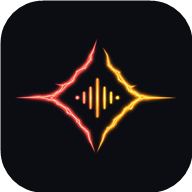
Maskable · 192, izrezano u krug
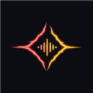
Maskable · 192, sigurna zonanajmanji mogući izrez
Na početnom zaslonu mobitela
Aplikacija
Aplikacija
GrooveRift
Aplikacija
Aplikacija
GrooveRift
Aplikacija
Aplikacija
Gornji red: iPhone (zaobljeni kvadrat). Donji red: Android s okruglim izrezom. Sive ikone su samo zamjena za druge aplikacije.
Datoteke: icons/apple-touch-icon-180.png, icons/icon-192.png, icons/icon-512.png,
icons/icon-maskable-192.png, icons/icon-maskable-512.png. U Fazi 4 idu u javne datoteke aplikacije i u manifest.
3 · Mala ikona (favicon) odabrano: S1 Obris (D-083)
Na 16 i 32 px pune munje se stope u mutnu mrlju (prvi red). Zato predlažem pojednostavljenu ikonu, nacrtanu od jednostavnih
oblika, a ne precrtanu sa slike (D-029). Svaka veličina ima malo deblje linije da ostane oštra. Slike su u stvarnoj veličini, a pokraj njih su uvećane 4×.
Puni detalj (umanjeni master)
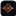
16324816 × 432 × 4
Mutno na 16 px: munje i val se ne razaznaju.
S1 · Obris
16324816 × 432 × 4
Dvije zagrade rascjepa (Coral lijevo, Amber desno) i tri crtice vala. Najbliže pravom znaku.
S2 · Val
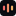
16324816 × 432 × 4
Samo val (5 crtica, na 16 px 3). Najčitljivije, ali bez rascjepa izgleda kao bilo koja glazbena aplikacija.
S3 · Silueta
16324816 × 432 × 4
Ispunjena zvijezda s izrezanim valom. Najjača silueta, ali teža i manje „električna”.
U kartici preglednika (stvarna veličina, 16 px)
S1 · Obris
S2 · Val
S3 · Silueta
Puni detalj
S1 · Obris
S2 · Val
S3 · Silueta
Puni detalj
Svijetla i tamna traka kartica. Tamna pločica drži ikonu vidljivom na obje.
Preporuka: S1 · Obris. Zadržava rascjep i dvije boje, pa se i na 16 px prepoznaje kao isti znak. Odabrana ikona ulazi u
favicon.ico (16, 32, 48) i u 64 px verziju.
4 · Jednobojna značka odabrano: S1 Obris (D-083)
Android u traci obavijesti prikazuje samo bijeli oblik na prozirnoj podlozi i boju ne koristi. Puni simbol tu postaje bijela mrlja,
pa značka mora biti čisti oblik. Ista tri oblika kao gore:
S1 · Obris
S2 · Val
S3 · Silueta
Kako izgleda na mobitelu
12:30▲ ▮ 82 %
grooverift · sadaAna je odgovorila na tvoj Daily Drop.
Statusna traka s tri značke (S1, S2, S3, slijeva) i obavijest sa S1. Primjer obavijesti je izmišljen.
Preporuka: značka u istom obliku kao mala ikona (uz S1, Obris).
5 · Simbol na svijetloj pozadini odabrano: oboje (D-083)
Aplikacija je samo tamna (D-063), pa ovo služi za tisak, dokumente, prezentacije i press. Sjaj je svjetlost, a svjetlost na
papiru ne postoji. Zato L1 „Tinta” obrće logiku: užarene jezgre munja postaju linija tinte, a sjaj samo blagi trag.
Amber na bijelom ima kontrast 1,5:1 i gotovo nestaje, pa desna strana prelazi u tamniji Amber #B87A12 (3,6:1).
To je nova nijansa samo za svijetli papir, nikad u aplikaciji. L2 „Pločica” ne mijenja ništa: originalni znak na tamnoj pločici.
Preporuka: oboje. L1 za tisak i dokumente, gdje znak stoji sam na bijelom. L2 za mjesta gdje ne znaš kakva je pozadina
(tuđe stranice, prijave, popisi aplikacija). Konačnu svijetlu verziju svejedno radi dizajner uz vektorski znak (X-04).
6 · Privremeni wordmark odobreno (D-083)
Ovo je D-011: „groove” i „rift” složeni u Sori Bold kao u prototipu (razmak −0,02 em), pretvoreni u vektorske oblike, s munjom
N2 (D-058) ispod „rift”. Munja je ovdje mirna jer slika ne može treptati; živa ostaje samo u aplikaciji. Oblici slova dolaze
iz statične datoteke Sora Bold (ista OFL licenca, isti izvor kao D-028). Položaje slova mjeri Chrome, pa se poklapa s tekstom u
aplikaciji. Privremeno: konačni wordmark radi dizajner prije javnog lansiranja (X-04).
Za tamnu pozadinu
SVG plus PNG 1200 i 600 px (za e-mail)
Za svijetlu pozadinu„groove” u Void Black. Munja je čista Coral bez sjaja jer se Amber na bijelom ne vidi.
Usporedba s tekstom iz aplikacije
grooverift
Lijevo je živi tekst u Sori (40 px), desno vektorski wordmark iste veličine slova. Oblici i razmaci moraju biti isti.
 i 64 i 512 px
i 64 i 512 px